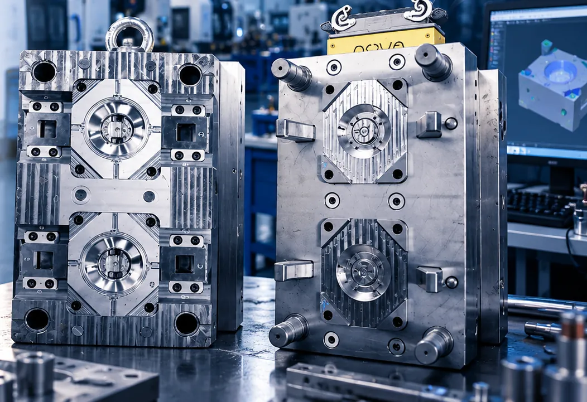
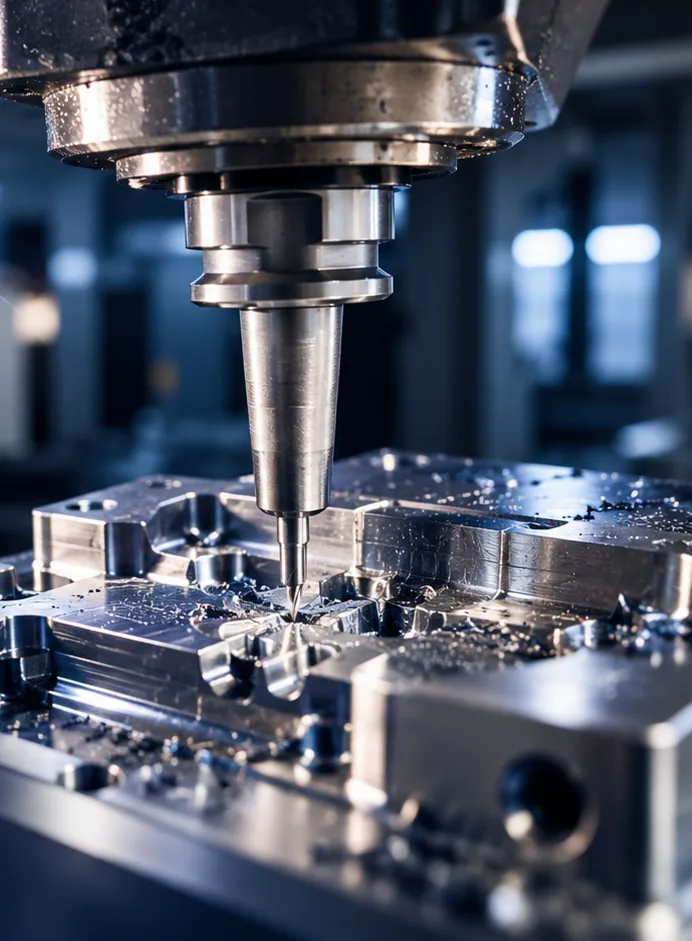
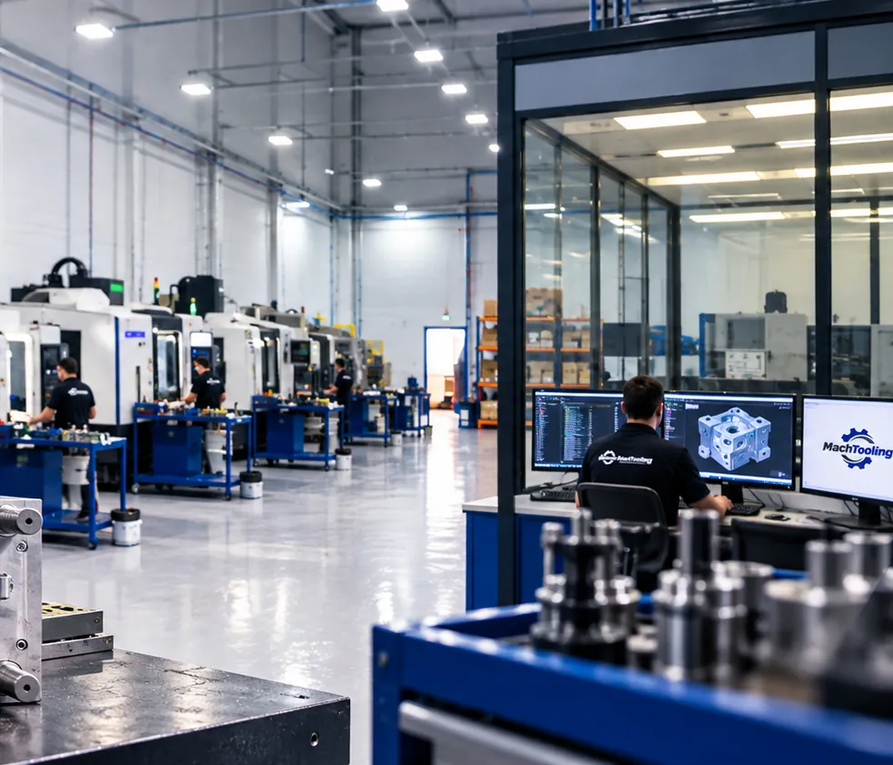
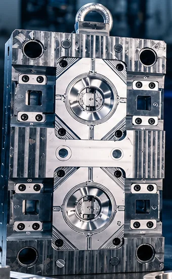
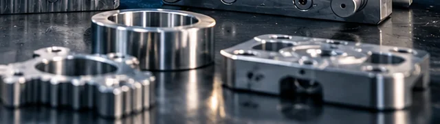
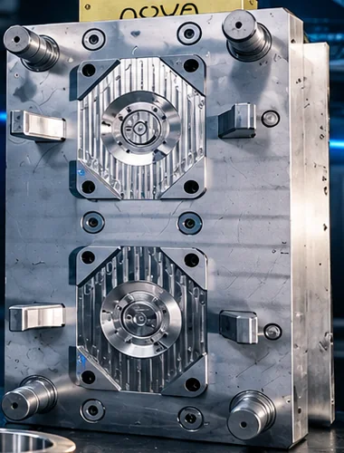
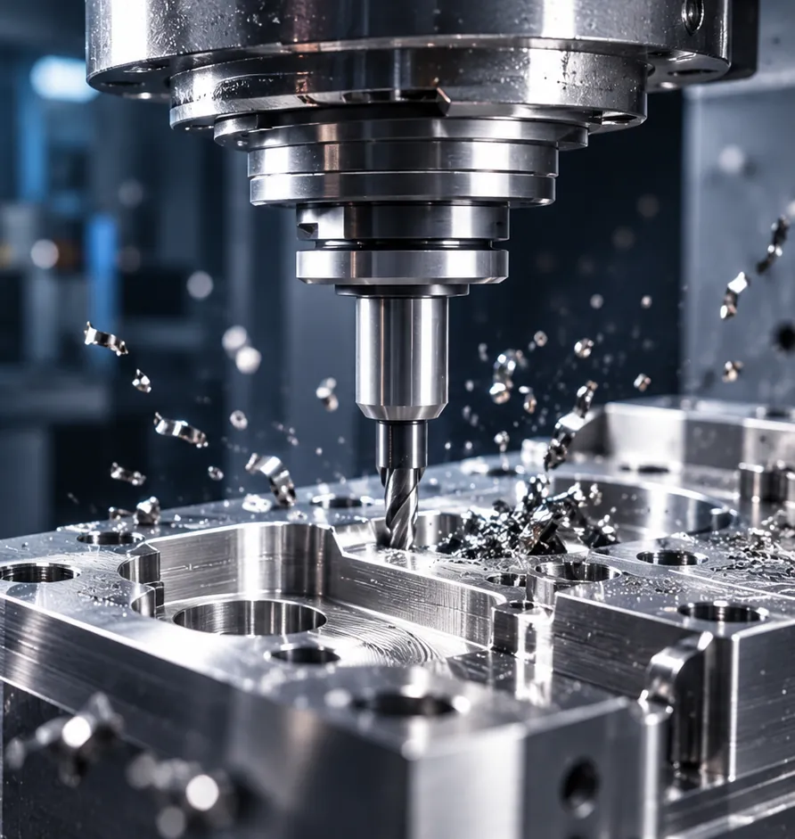
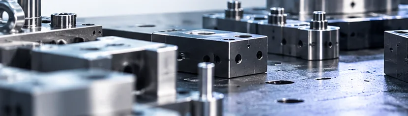
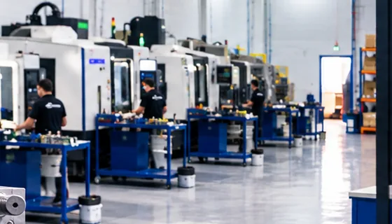
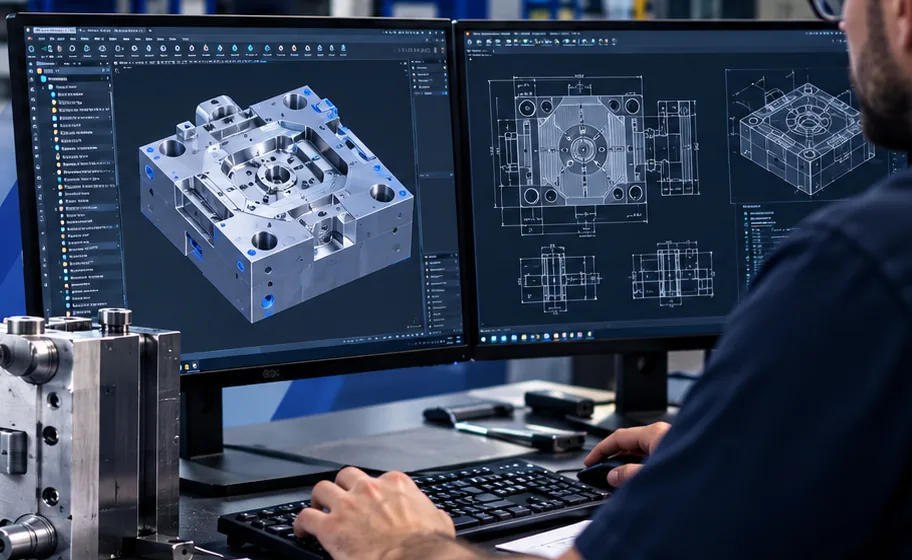

Engenharia e fabricação de moldes
Desenvolvimento e fabricação de moldes industriais, considerando as características do produto, a viabilidade de fabricação e as exigências do processo produtivo.
Solicitar orçamento →
Ferramentaria e usinagem de precisão · Cachoeirinha/RS
Engenharia, ferramentaria e usinagem de precisão para transformar desafios industriais em soluções de alto desempenho.
Do desenvolvimento do projeto à fabricação do ferramental, unimos conhecimento técnico, tecnologia e compromisso com a qualidade para entregar soluções sob medida.
Sobre a Mach Tooling
Por trás de cada molde existe estudo, dedicação e conhecimento técnico.
Na Mach Tooling, transformamos projetos em soluções que ganham vida na produção. Nossa atuação integra engenharia, desenvolvimento de ferramentas e processos de fabricação, sempre com foco em qualidade, funcionalidade e desempenho.
Combinamos análise técnica, tecnologia e experiência prática para desenvolver soluções que atendam às necessidades de cada aplicação industrial.

Soluções industriais
Especialidades sujeitas à validação do cliente antes da publicação.

Desenvolvimento e fabricação de moldes industriais, considerando as características do produto, a viabilidade de fabricação e as exigências do processo produtivo.
Solicitar orçamento →
Soluções de ferramentaria para processos Metal Injection Molding, aplicadas à fabricação de componentes metálicos de geometrias complexas.
Solicitar orçamento →
Projeto e fabricação de moldes destinados a processos de transformação de materiais poliméricos.
Solicitar orçamento →
Desenvolvimento de ferramentas para processos industriais relacionados à fabricação de componentes em alumínio.
Solicitar orçamento →Soluções de ferramentaria para diferentes necessidades de conformação e transformação industrial.
Solicitar orçamento →
Fabricação de peças e componentes técnicos sob medida, com atenção às especificações e aos requisitos do projeto.
Solicitar orçamento →
Desenvolvimento de dispositivos, gabaritos e ferramentas de apoio à produção, montagem e controle.
Solicitar orçamento →
Fabricação de componentes em série, conforme desenhos técnicos e requisitos de produção.
Solicitar orçamento →Engenharia e tecnologia
A qualidade de uma solução industrial começa antes da fabricação. Por isso, a Mach Tooling valoriza a análise de projeto, o planejamento e a integração entre engenharia e produção.

Fluxo de referência, sujeito à confirmação da empresa. Imagens ilustrativas, a serem substituídas por registros reais.
Nossa estrutura
A organização do ambiente produtivo, o planejamento das operações e a atenção aos detalhes fazem parte da forma como a Mach Tooling desenvolve suas soluções.
Imagens ilustrativas para a demonstração. Serão substituídas por fotografias reais da Mach Tooling após o envio do material pela empresa.
Projetos e aplicações
Cada projeto representa um desafio único. Nossa equipe trabalha para transformar requisitos técnicos em soluções de ferramentaria e usinagem alinhadas às necessidades da aplicação.
Imagens ilustrativas, sem associação a clientes ou projetos específicos. Descrições técnicas serão incluídas quando fornecidas e aprovadas.
Diferenciais
Integração entre análise técnica, projeto e fabricação.
Atenção aos detalhes construtivos e aos requisitos de cada aplicação.
Desenvolvimento orientado às necessidades específicas de cada projeto.
Atuação focada em soluções funcionais, confiáveis e adequadas ao processo produtivo.
Compartilhe sua necessidade com a equipe Mach Tooling e descubra como podemos contribuir com seu projeto industrial.
Solicitar orçamento técnicoContato
Descreva sua necessidade e, se desejar, anexe o desenho técnico ou a documentação do projeto.